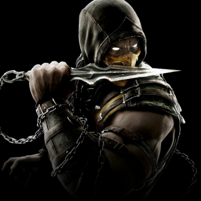
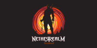
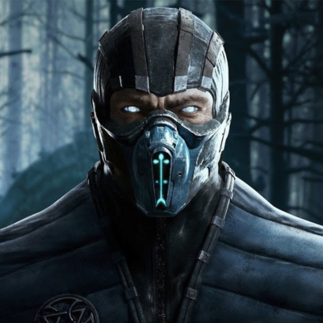
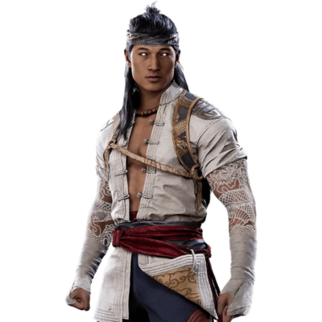
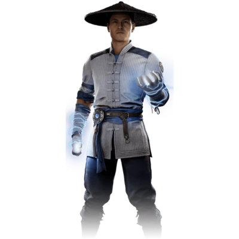

Scorpion

Scorpion é um ninja espectral, mestre das artes marciais e usuário de kunai com corrente. Busca vingança contra aqueles que traíram seu clã.

MORTAL 11 KOMBAT foi criado pela NetherRealm Studios, uma subsidiária da Warner Bros. Interactive Entertainment. O jogo foi desenvolvido por uma equipe liderada por diretores como Ed Boon e John Vogel, com contribuições de designers veteranos da série. Lançado em 2019, ele evoluiu a partir das versões anteriores, introduzindo mecânicas inovadoras como variações de personagem e um modo história épico. A série alcançou sucesso global através de torneios competitivos, crossovers e uma comunidade dedicada, tornando-se um ícone dos jogos de luta.

Scorpion é um ninja espectral, mestre das artes marciais e usuário de kunai com corrente. Busca vingança contra aqueles que traíram seu clã.

Sub-Zero é um assassino cryomancer do clã Lin Kuei, capaz de congelar inimigos e manipular gelo.

Liu Kang é um campeão shaolin, mestre de fogo e campeão do torneio MORTAL 11 KOMBAT.

Raiden é o deus do trovão, protetor da Terra Realm, com poderes elétricos devastadores.
Liu Kang, Kitana, Raiden, Scorpion, Sub-Zero, Sonya Blade e Cassie Cage são centrais à narrativa.
Fujin, Jacqui Briggs, Joker, Spawn e Kotal Kahn são frequentemente mencionados como os mais poderosos.
Sub-Zero, Scorpion, Liu Kang, Johnny Cage e Noob Saibot são ideais para iniciantes.
Kronika, Shao Kahn, D'Vorah, Frost, Kollector.
Scorpion, Sub-Zero, Raiden, Liu Kang, Sonya Blade, Kung Lao, Jax Briggs, Kano.
Cassie Cage, Jacqui Briggs, Kotal Kahn, Erron Black, D'Vorah.
Geras (controlador do tempo), Cetrion, Kollector.
Spawn, Joker, Fujin, Terminator, RoboCop, Shang Tsung.
Este vídeo mostra alguns dos personagens mais fortes para começar a jogar no MORTAL 11 KOMBAT: